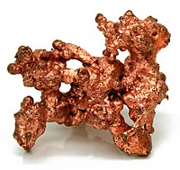

Numero atomico: 29
Massa atomica: 63,55
Temperatura di fusione (°C): 1084
Temperatura di ebolizione (°C): 2567
Energia di prima ionizzazione (kj/mol): 745
Elettronegatività (secondo Pauling): 1,90
Densità: 8,96
Numeri di ossidazione: +1+2
Configurazione elettronica: 1s2, 2s2, 2p6, 3s2, 3p6, 3d10, 4s1
Maggiori Informazioni